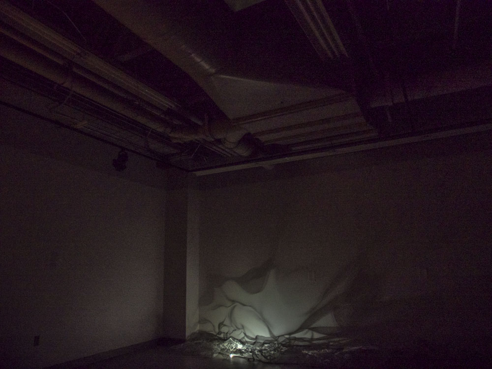
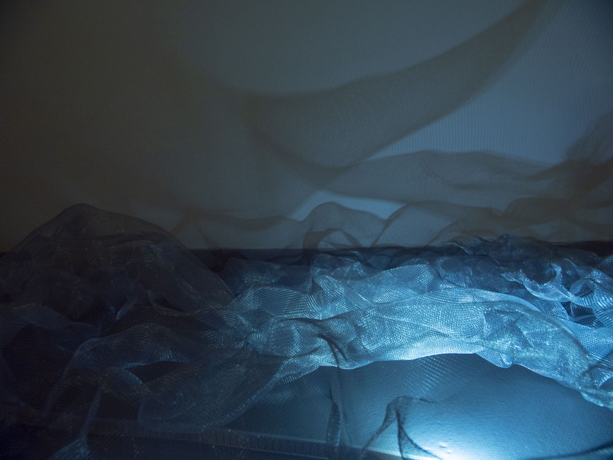
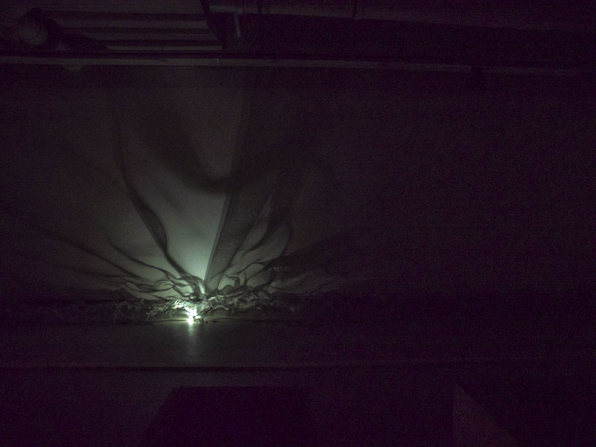
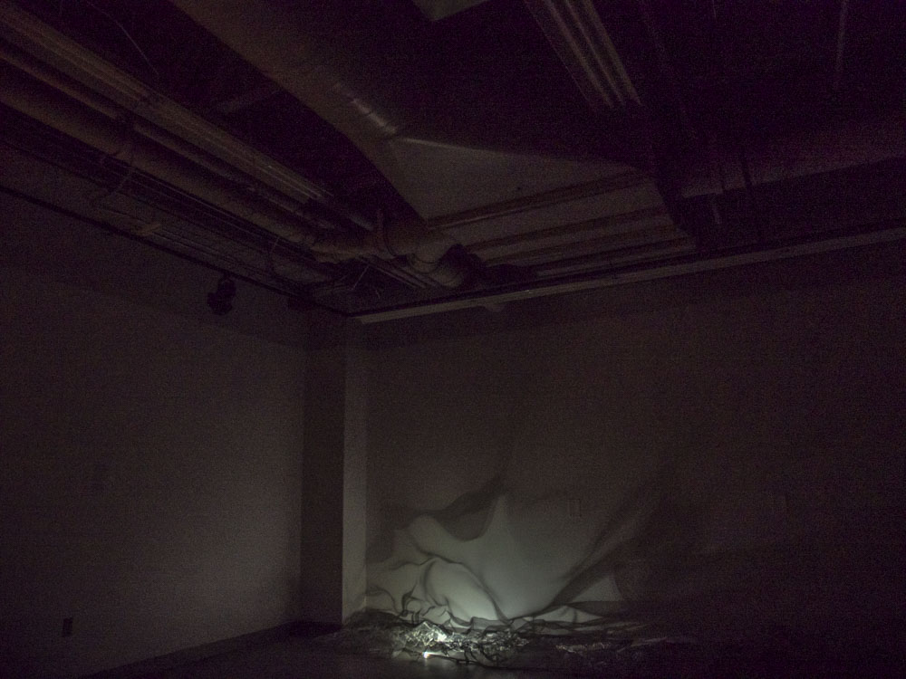
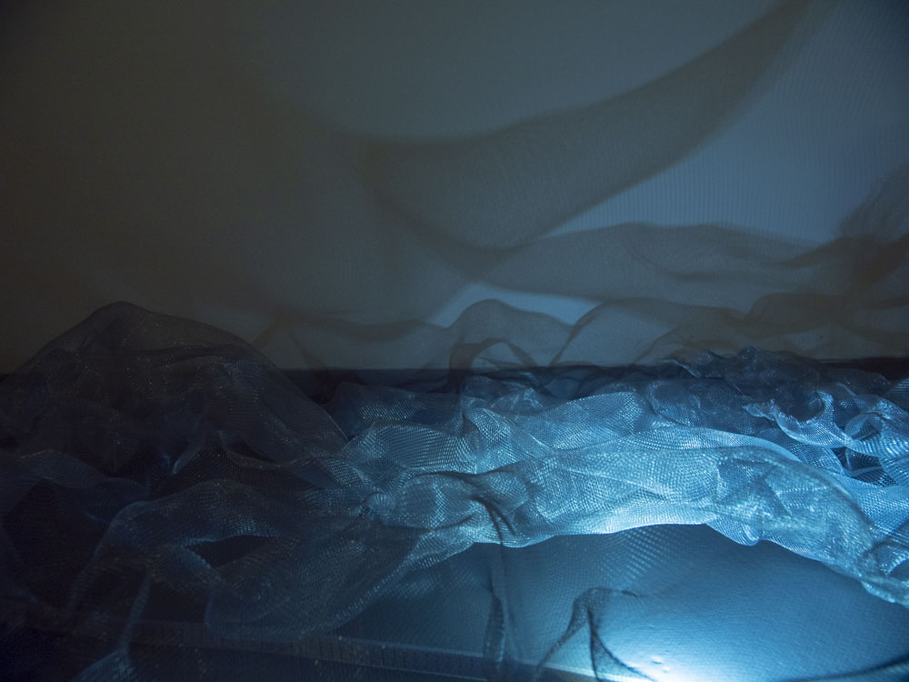
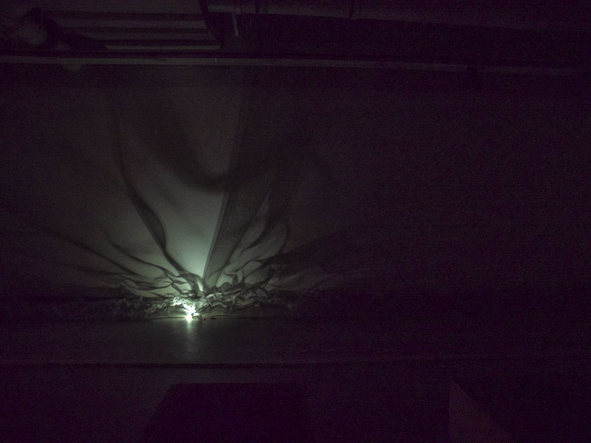

Bankhead: Revisited shares the experience of exploring an abandoned townsite using the site of Bankhead, Alberta as a case study. The action of following a Path of Curiousity, where I allow myself to be drawn to the next interesting thing at the site is depicted by a light travelling under crumpled screen along one of the long walls in the darkened gallery. The shadows cast by the light move along the wall, representing the half remembered scenes of interest found along the path. This shadowed work is paired against several copper plate prints of some of the locations I found, represented as vague lines and shapes.
The Bankhead Townsite in Banff National Park was dismantled in the 30's after the coal mine had been running for 20 years. The houses were moved to various towns, mostly banff and Canmore. Most industrial buildings & machiners from Lower Bankhead were taken to the Corwsnest Pass and the mine in Canmore.
Grouped Images.The prints are arrannged according to streets from the townsite: Rundle, Aylmer and Cascade. They also correspond to the visibility of foundations left. Some are exposed (Rundle) some are overgrown (Aylmer) and some streets (Cascade) did not have basements, leaving only holes behind. This progression throgh the work is based on the amount of material to fuel one's imagination, from solid remnants to rumors or possibilities. The gabled pieces at the end represent the industrial complex of buildings which no longer exist.
These images are also defined by the printing process, where there are distinct outlines degrading slowly to vague representations of the places that were scanned. The print process was copper plate, exposed photo emulsion followed by acid etching. The aesthetic nature of the print technique is an important part of the work.
Moving Shadows.An important part of Bankhead, Revisited is the shadows which play along the far wall. The gallery is dark except for lights shining on the grouped images and the statement for the installation. Along one wall a moving light source casts shadows through a crumpled screen, referencing the path of curiousity which was taken while exploring the Bankhead townsite. There are two seats available for people to sit while watching the shadows move along the entire length of the wall. During the creation of htis work I explored the landscape of Bankhead, allowing only my curiousity to guide my way. This exploration was an iimportant compoonent of the research process which helped to resolve the analysis and synthethis for this work.


 




